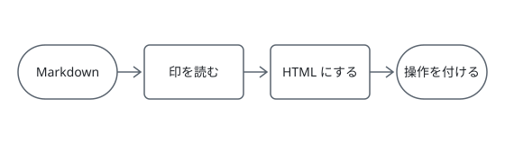

拡張記法で書いた設計書
この文書は mdmark の拡張記法の見本です。対象の版は v0.2.0 で、状態は 実装中 です。
印を書いた Markdown を mount に渡すと、記法ごとの表示と操作が付きます。
- 配布物の
index.jsとindex.cssをページで読み込む - 描く先の要素を用意し、
mountに要素と Markdown を渡す - 書いた印のとおりに、表の操作やタブが付いた文書が描かれる
対応ブラウザは Chrome・Edge・Firefox・Safari の直近の版です。
macOS
Homebrew で Node.js を入れてから、配布物を取得します。
brew install node
npm install @shuhei1101/mdmarkWindows
winget で Node.js を入れてから、配布物を取得します。
winget install OpenJS.NodeJS
npm install @shuhei1101/mdmarkLinux
ディストリビューションのパッケージマネージャで Node.js を入れてから、配布物を取得します。
sudo apt install nodejs npm
npm install @shuhei1101/mdmark配布物と、記法を受け持つソースの置き場所です。
- mdmark/
- dist/
- index.js
- index.css
- index.d.ts
- src/
- index.ts
- render/
- marks.ts
- parser.ts
- parts/
- notice.ts
- package.json
- dist/
| 表の操作 | table | 6.2 | オン | 2026-11-04 |
| 注意書き | callout | 1.4 | オン | 2026-11-04 |
| タブ | tabs | 2.1 | オン | 2026-11-12 |
| ステップ | steps | 0.4 | オフ | 2026-11-12 |
| ファイルツリー | tree | 1.8 | オフ | 2026-12-01 |
| 目次 | toc | 0.9 | オン | 2026-12-01 |
| 図表の番号 | figures | 1.1 | オン | 2026-12-15 |
| 一致する行がありません | ||||
「記法」で絞り込む
「既定」で絞り込む
一致する候補がありません
「入った日」で絞り込む
印で囲まない表は既定の種類で、見出し行が上端に留まり、はみ出すときに各列のピン止めが付きます。
| 文書 | 行数 | 表 | 図 | Chrome | Edge | Firefox | Safari | iOS Safari | Android Chrome |
|---|---|---|---|---|---|---|---|---|---|
| 導入の手順 1 | 128 | 8 | 0 | 18 | 17 | 23 | 16 | 15 | 16 |
| API リファレンス 1 | 573 | 4 | 6 | 55 | 62 | 61 | 70 | 58 | 53 |
| 設定の一覧 1 | 454 | 7 | 3 | 52 | 35 | 36 | 34 | 46 | 43 |
| 用語集 1 | 851 | 4 | 4 | 123 | 119 | 116 | 124 | 89 | 104 |
| 変更履歴 1 | 260 | 6 | 1 | 31 | 40 | 30 | 41 | 28 | 37 |
| 設計方針 1 | 1,022 | 8 | 3 | 154 | 133 | 128 | 136 | 112 | 101 |
| 画面設計 1 | 227 | 6 | 3 | 17 | 23 | 18 | 17 | 19 | 20 |
| 非機能要件 1 | 390 | 4 | 2 | 51 | 37 | 41 | 52 | 53 | 38 |
| テストの手順 1 | 176 | 7 | 5 | 26 | 18 | 23 | 17 | 17 | 21 |
| 運用の手順 1 | 996 | 3 | 4 | 143 | 181 | 168 | 140 | 177 | 121 |
| 導入の手順 2 | 827 | 4 | 5 | 132 | 113 | 114 | 134 | 94 | 110 |
| API リファレンス 2 | 166 | 4 | 5 | 18 | 12 | 14 | 15 | 15 | 19 |
| 設定の一覧 2 | 1,090 | 8 | 5 | 175 | 192 | 168 | 171 | 141 | 158 |
| 用語集 2 | 919 | 0 | 6 | 157 | 111 | 131 | 162 | 135 | 158 |
| 変更履歴 2 | 573 | 11 | 3 | 87 | 73 | 67 | 93 | 73 | 88 |
| 設計方針 2 | 1,123 | 9 | 0 | 160 | 108 | 131 | 132 | 150 | 105 |
| 画面設計 2 | 576 | 3 | 3 | 48 | 52 | 62 | 69 | 50 | 65 |
| 非機能要件 2 | 226 | 9 | 3 | 26 | 37 | 36 | 29 | 37 | 39 |
| テストの手順 2 | 607 | 3 | 2 | 51 | 73 | 51 | 68 | 57 | 60 |
| 運用の手順 2 | 500 | 12 | 0 | 62 | 50 | 53 | 69 | 49 | 55 |
| 導入の手順 3 | 662 | 12 | 3 | 51 | 53 | 49 | 51 | 63 | 62 |
| API リファレンス 3 | 967 | 6 | 0 | 94 | 97 | 93 | 73 | 86 | 96 |
| 設定の一覧 3 | 1,133 | 7 | 1 | 132 | 118 | 107 | 114 | 125 | 124 |
| 用語集 3 | 44 | 1 | 2 | 5 | 5 | 6 | 5 | 6 | 7 |
| 変更履歴 3 | 325 | 6 | 6 | 24 | 33 | 39 | 38 | 39 | 27 |
| 設計方針 3 | 409 | 8 | 2 | 45 | 46 | 63 | 71 | 59 | 46 |
| 画面設計 3 | 112 | 6 | 5 | 11 | 10 | 10 | 13 | 9 | 11 |
| 非機能要件 3 | 129 | 2 | 0 | 16 | 15 | 13 | 16 | 12 | 18 |
| テストの手順 3 | 467 | 2 | 2 | 48 | 41 | 33 | 44 | 50 | 33 |
| 運用の手順 3 | 1,034 | 9 | 1 | 92 | 116 | 91 | 111 | 124 | 92 |
| 用語 | 意味 |
|---|---|
| 印 | HTML コメントで書く、記法の始まりと終わりの目印 |
| 範囲の印 | <!-- /名前 --> の閉じの印と対で、間の Markdown を囲む印 |
| 書き方の警告 | 読めない指定とその直し方を、書く人へ知らせる枠 |
表を開く
| v0.1.0 | 2026-10-10 | 文書を描く土台を入れた |
| v0.2.0 | 2026-11-04 | 拡張記法を入れた |
| v0.2.1 | 2026-11-12 | 印刷でタブを全て出すようにした |
| 印 | 囲む範囲 | 引数 |
|---|---|---|
table | あり | 種類・+機能・-機能・closed |
表の機能は次の 3 つで、
| ||
tabs | あり | なし |
fig | なし | ID |
補足
印は HTML コメントなので、GitHub で読んでも画面に出ません。
ヒント
同じ種類の表が続くときは、範囲の印で表をまとめて囲めます。
重要
範囲の印は、閉じの印 <!-- /名前 --> と対で書きます。
警告
見出しの無いタブの範囲はタブにならず、中身がそのまま描かれます。
注意
文書に書いたスクリプトは実行されません。
警告
閉じた注意書きは、題を押すと開きます。長い補足を畳んでおくときに使います。


| 段 | 受け持つもの |
|---|---|
| 印を読む | 印の範囲と引数を決める |
| HTML にする | 記法ごとの HTML を出す |
| 操作を付ける | 並べ替え・タブの切り替えを付ける |
使う側が registerExtension で足した印 greet は、文書にあるときだけ読み込まれます。
表示に使う拡張（greet）を読み込めませんでした。ネットワークにつながっているかを確かめて、ページを読み込み直してください。
書き方の警告
<!-- greet: World 2 --> の引数が、拡張 greet の決まりに合いません。直してから読み込み直してください。
- 1 つ目の
World: 英小文字だけで書いてください - 2 つ目の
2: 引数は 1 つだけ書けます
引数が合わない印のほかは、そのまま描かれます。
読めない指定があっても本文は描かれ、その箇所に書き方の警告が出ます。
書き方の警告
<!-- table: unknown +sort --> の種類 unknown は使えません。使える種類は data・plain です。既定の種類に +sort を当てて描いています。
| 幅 | 640 |
| 高さ | 480 |
書き方の警告
<!-- tabs --> の範囲に、タブ名にする見出しがありません。タブにしたい中身ごとに見出し（### macOS など）を書いてください。範囲の中身はそのまま描いています。
macOS では Homebrew、Windows では winget で入れます。
書き方の警告
リンク先の #fig-missing の図表がありません。<!-- fig: missing --> を図か表の直前に書くか、リンク先を直してください。
詳しくは 図 を見てください。
書き方の警告
<!-- section: hidden --> の hidden は使えません。使える値は closed・open です。この節は開いた状態で描いています。
節の中身はそのまま読めます。